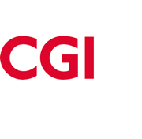

EMPLOYEUR
CGI
Conseil en expérience client digitale
Accompagnement client
J’accompagne les clients dans leurs enjeux de transformation de l’expérience client digitale, du cadrage des besoins à la mise en œuvre de solutions web, CRM et e-commerce.
Responsabilités transverses chez CGI
- Contribution au management de proximité de 5 consultants.
- Appui aux opportunités commerciales et à l’avant-vente.
- Construction et évolution de l’offre.